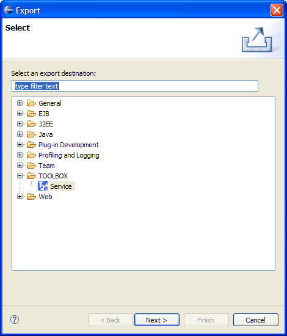
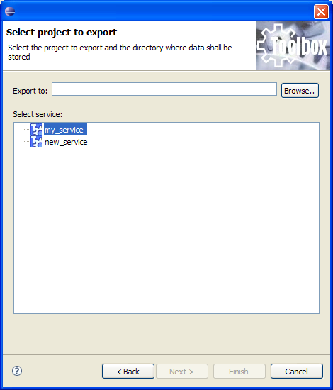

A service can be exported in order to be deployed on another TOOLBOX DE (see here) or on a TOOLBOX RE. In order to achive this goal select the service on the workspace and righ-click on it. Select "Export" from the context menu. The following figure shows the dialog page that is displayed to the user.

Select "TOOLBOX/Service" and click "Next". The next wizard page (see below) will let you specify which service to export (you may change the service, if an erroneous selecting has been done) and let you specify where to store the export package. Clicking on the "Finish" button a zip file with the following name is created: <service_name>.zip where <service_name> is the nema of the service exported.
